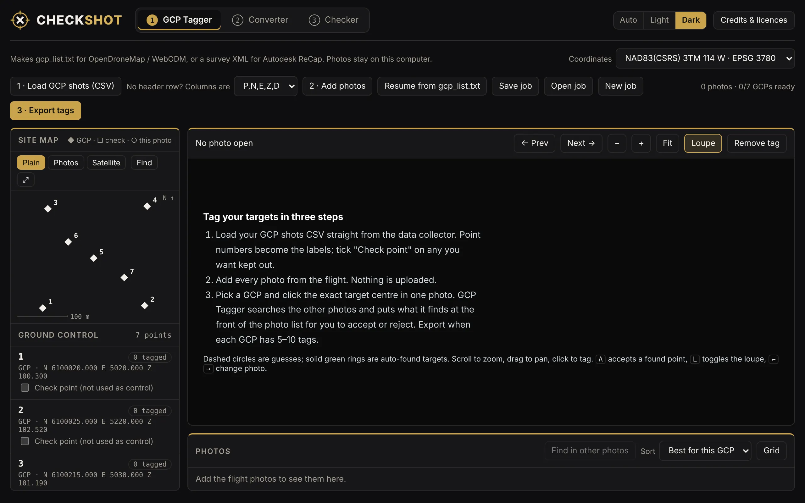
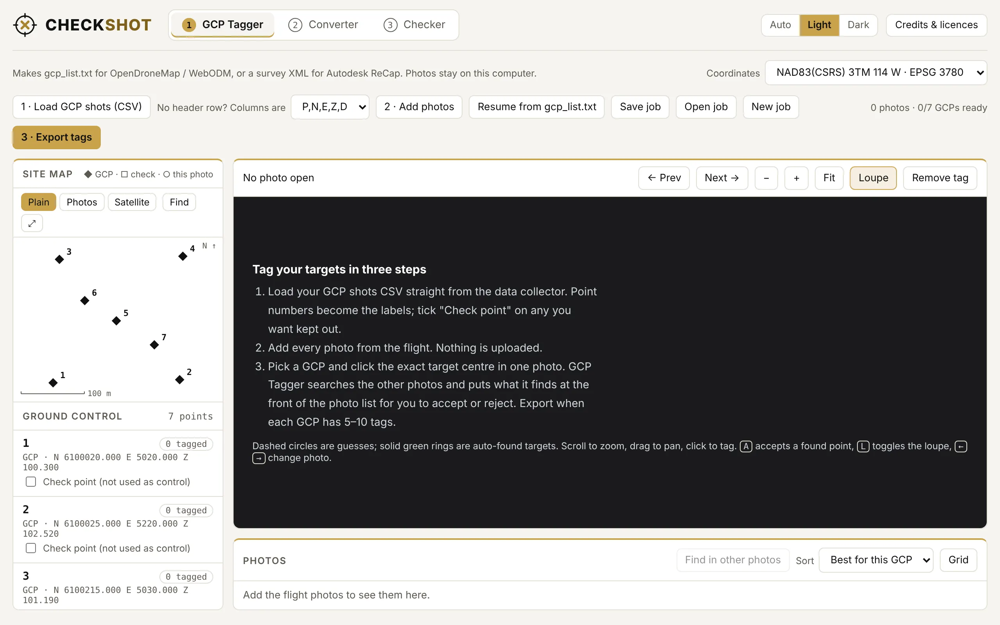

1 Tag the control
Load the GCP shots from your data collector and the photos from the flight. Click the centre of a target in one photo. The Tagger looks for that target in the other photos and puts what it finds at the front of the list for you to accept or reject.



- Writes
gcp_list.txtfor OpenDroneMap and WebODM, or a survey XML for Autodesk ReCap. - Notices when your firm's grid is shifted from the true projection, tells you by how much, and remembers it.
- A point with no elevation in the file is left out of the export and named. Nothing is written with Z = 0.
- Tick any shot as a check point and it is kept out of the control.